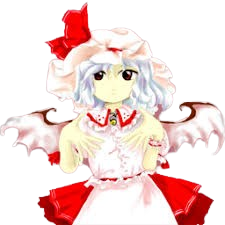

Remilia é frequentemente vista como:
Orgulhosa – ela se comporta como uma verdadeira nobre, com confiança e autoridade.🧠 Inteligência e presença
Remilia demonstra uma mente estratégica e confiante:
Gosta de planejar suas ações
Mantém postura de liderança
Valoriza sua imagem como aristocrata
Ela se vê como uma figura importante e poderosa em Gensokyo.
🦇 Comportamento aristocrático
Como uma vampira nobre, Remilia age com superioridade:
Espera respeito dos outros
Gosta de luxo e conforto
Age como dona de um grande império
Mesmo em situações simples, mantém sua postura de "senhora do castelo".
🎀 Lado infantil
Apesar de sua aparência imponente, Remilia também pode agir de forma infantil:
Faz birras quando contrariada
Se diverte com coisas simples
Pode ser impulsiva e teimosa
Isso cria um contraste curioso com sua imagem elegante.
👨👩👧 Relação com os outros
Remilia mantém laços fortes com aqueles ao seu redor:
Tem grande confiança em sua empregada Sakuya Izayoi
Cuida de sua irmã Flandre Scarlet
Vive cercada por servos e aliados em sua mansão
Apesar de sua postura autoritária, valoriza seus vínculos.
Dona da Mansão do Diabo Escarlate
Remilia é a proprietária da Mansão do Diabo Escarlate, onde vive com sua irmã e seus servos. Ela governa seu território com autoridade e estilo aristocrático.
Nobre vampira
Como uma vampira antiga, Remilia representa a elite youkai de Gensokyo, mantendo tradições e costumes nobres.
Manipulação do destino
O poder mais misterioso de Remilia é manipular o destino:
Alterar probabilidades
Influenciar eventos futuros
Guiar resultados a seu favor
Criar situações inevitáveis
Embora difícil de entender, esse poder a torna extremamente perigosa.
Força e velocidade de vampira
Remilia possui habilidades físicas sobrenaturais:
Força muito acima de humanos
Velocidade extrema
Alta resistência
Ela é uma combatente poderosa mesmo sem usar magia.
Controle sobre morcegos e escuridão
Como vampira, ela pode assumir formas relacionadas a morcegos e manipular sombras, usando isso para combate e movimentação.
Voo
Remilia voa livremente usando suas asas, participando de batalhas aéreas de danmaku com grande habilidade.
Seu estilo de luta combina elegância, poder bruto e controle absoluto da situação.

Espécie: Vampiro
O Diabo Escarlate (Aka Akuma/Scarlet Devil)